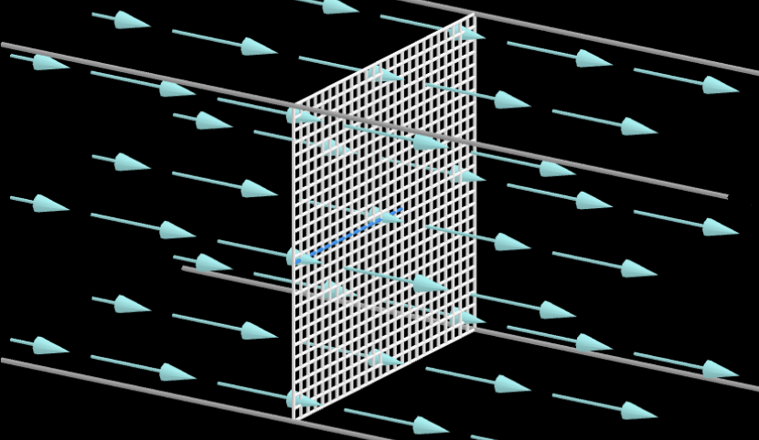
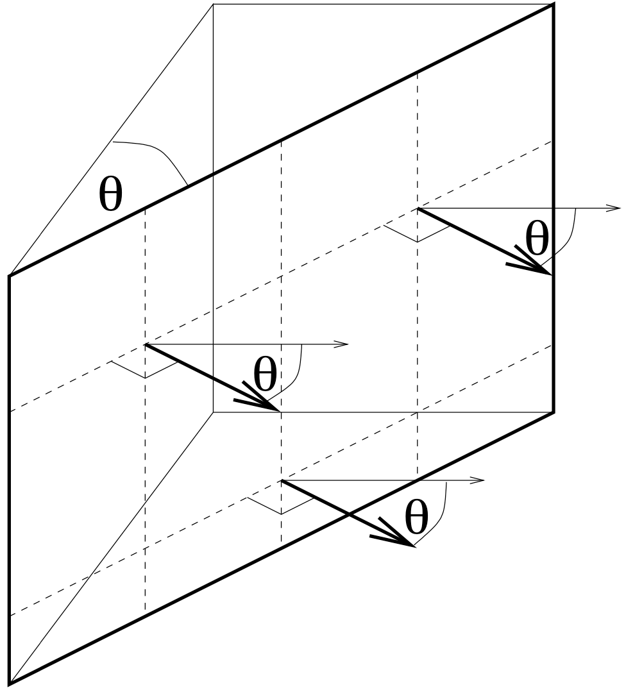
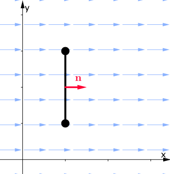
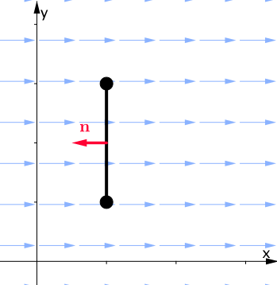

Chapter 38
By the end of this section, you should be able to answer the following questions:
In this section we introduce the concept of flux: In three dimensions, the flux of a vector field across a given surface is defined to be the "flow rate" of the vector field through the surface.
|
Since many vector fields involve no motion (e.g., electric fields, magnetic fields), this definition can be very difficult to comprehend at first. |
A nice context for working with flux in order to understand its definition is by considering the velocity vector of a fluid (so now we do have motion).
Fluid simulation by Amanda Ghassaei 🔄 (Reset/Re-start)
A nice context for working with flux in order to understand its definition is by considering the velocity vector of a fluid (so now we do have motion).
More here dynamicmath.xyz 🔄 (Reset/Re-start)
In three dimensions, the flux of a fluid across a surface is given in units of volume per unit time. In other words, the flux tells us how much of the fluid (volume) passes through a given surface in one second.
Consider a river flowing at a constant velocity of $2m/s$ in only one direction. Now imagine placing a $3m$ square fishing net into the river so that it somehow stays perpendicular to the flow of the river. What is the flux of the water through the net?
What is the flux of the water through the net?
| $\text{Vol. through net surface after 1 second}$ | $= 3 m\times 3 m \times 2 m \times 1 s$ $=18 m^3/s$ |
Then $\underbrace{\; {\large\text{Flux}}\;}_{{\tiny\text{Amount of water through net per unit of time}}}$ $= 18 ~m^3/s$
Now if we rotate the net through an angle $\theta,$ what is the flux through the net?
Now if we rotate the net through an angle $\theta,$ what is the flux through the net?
|
Consider the component of the flow perpendicular to the net $\v\pd \n = \norm{\v}\norm{\n}\cos\theta,$ where $\n$ is the unit vector perpendicular to the surface.
Another method: In 1 second, the same volume passes through this net as a net perpendicular to the motion with dimensions $3\times 3\cos \theta .$ \[ \Rightarrow \text{Flux} = \underbrace{ 3\times 3 \cos \theta}_{\text{Perpendicular net}} \times \underbrace{2}_{\text{velocity}} = 18 \cos\theta ~m^3/s. \] |
Before we look at the flux of a vector field through more general surfaces, let's look at flux in two dimensions, by considering the flow of a two dimensional fluid through a curve in the $xy$-plane. Note that in this context of a fluid in $2$D, flux has dimensions area per unit time.
To start, consider the problem of calculating the flux of a fluid with constant velocity $\v = 2~\i$ through a line segment $C$ perpendicular to the flow, where $C$ is given by \[ C = \left\{(x,y)~|~ x = 2, 2\leq y \leq 6\right\}. \]
Constant velocity $\v = 2~\i$ through a line segment $C$ perpendicular to the flow, where $C$ is given by $C = \left\{(x,y)~|~ x = 2, 2\leq y \leq 6\right\}.$
|


|
Consider the component of the flow perpendicular to the net $\v\pd \n = \norm{\v}\norm{\n}\cos\theta$, where $\n=\i$ is the unit vector perpendicular to the curve $C$.
If $\n = -\i$, we have that $\theta = \pi$. \[ \Rightarrow \text{Flux} = (\v \pd \n) \times (\text{length of }C) = -8 ~m^2/s. \] |
Now consider calculating the flux of the velocity vector $\v(x,y)$ in the $x$-$y$ plane through a curve $C$. We first divide $C$ up into arcs of length $\Delta S$, and approximate $\v$ as constant over each arc.
This constant vector over each arc shall be evaluated at a representative point in each arc, say $P^* = (x^*, y^*)$.
We also approximate the arc as a straight line, so that
$\displaystyle \Delta S \approx \sqrt{(\Delta x)^2+ (\Delta y)^2} \approx \norm{\r'(t)}\Delta t$ (see Def. in 35.1)
The component of $\v$ which is perpendicular to $C$ (over $\Delta S$) is $\approx \v(P^*)\pd \n (P^*)$.
flux through one arc $\approx \v(P^*)\pd \n (P^*)~\Delta S$.
$\Rightarrow $ total flux through $C$ $\approx \displaystyle \sum_{i}\v(P_i^*)\pd \n (P_i^*)~\Delta S_i$.
If we take the limit as $\Delta S$, we obtain an exact expression for the flux over the entire curve C as a line integral: \[ \text{Flux}= \int_C \v\pd \n ~dS \] where $\n$ is a unit vector normal to $C$.
If we take the limit as $\Delta S$, we obtain an exact expression for the flux over the entire curve C as a line integral: \[ \text{Flux}= \int_C \v\pd \n ~dS \] where $\n$ is a unit vector normal to $C$.
We use this expression as a definition of flux of any two dimensional vector field $\v$ across a plane curve $C$. Note then that \[ \text{dimensions of flux (in 2D)} = (\text{dimensions of }\v) \times (\text{distance}). \]
To evaluate the $2$D flux integral \[ \int_C \v\pd \n ~dS, \] we need to parameterise $C$ and express all quantities in the line integral in terms of this parameterisation (similar to the computation of line integral in the definition of work done).
Note: We may take $\n = \k\times \T$ in step 4 above for an open curve $C$. Namely, one is free to choose the direction of $\n$ (if it is not specified in a question) as long as one is consistent along the entire $C$.
|
Flux $\displaystyle =\int_C\v \pd \n ~dS=\;?\;\;$ Parametrise the curve $C$: \[ \r(t) = 2~\i + t~\j,\;\;2\leq t\leq 6. \] So $\r'(t) = \j,$ $dS = \norm{\r'(t)}~dt=dt$ and
|
Let $C$ be a piecewise-smooth, simple closed curve. Let $v_1(x, y)$, $v_2(x, y)$ be continuous in the region bounded by $C$. (Note that these are some of the conditions of Green's theorem!)
The net outward flux of $\v = v_1~\i + v_2~\j$ across $C$ is given by \[ \text{Net outward flux} = \oint_C \v \pd \n ~dS, \] where $\n$ is a unit vector normal to $C$, directed outward from the region bounded by $C$.
from $(2,0)$ to $(-2,0)$ via the semicircle of radius $2$ centred at the origin (for $y \geq 0$) followed by the straight line from $(-2,0)$ to $(2,0).$
from $(2,0)$ to $(-2,0)$ via the semicircle of radius $2$ centred at the origin (for $y \geq 0$) followed by the straight line from $(-2,0)$ to $(2,0)$.
|
Net Outward Flux $\displaystyle =\oint_C\v \pd \n ~dS=\;?\;\;$ Where $ C = C_1 + C_2. $ So
|
from $(2,0)$ to $(-2,0)$ via the semicircle of radius $2$ centred at the origin (for $y \geq 0$) followed by the straight line from $(-2,0)$ to $(2,0)$.
|
Parametrisation of $C_1$: \[ \r (t) = 2 \cos t~\i+ 2 \sin t~\j, \;\; 0\leq t \leq \pi. \] So $\r'(t) = -2 \sin t~\i+ 2 \cos t~\j,$ $\norm{\r'(t)} = 2$ and $$dS = \norm{\r'(t)} ~dt = 2~dt.$$
$$\Rightarrow \;\v(\r(t)) = 4 \cos t \sin t~\i + 4 \cos t \sin t~\j.$$ |
from $(2,0)$ to $(-2,0)$ via the semicircle of radius $2$ centred at the origin (for $y \geq 0$) followed by the straight line from $(-2,0)$ to $(2,0)$.
|
$$\Rightarrow \v \pd \n_1 = 4 \cos^2 t \sin t + 4 \cos t \sin^2 t, \quad dS = 2 ~dt$$
|
from $(2,0)$ to $(-2,0)$ via the semicircle of radius $2$ centred at the origin (for $y \geq 0$) followed by the straight line from $(-2,0)$ to $(2,0)$.
|
Parametrisation of $C_2$: \[ \r (t) = t~\i+ 0~\j, \;\; -2\leq t \leq 2. \] So $\r'(t) = \i$, $\norm{\r'(t)} = 1$ and $dS = \norm{\r'(t)} ~dt = dt$.
$$\Rightarrow \v(\r(t)) = 0~\i + 0~\j.$$ |
from $(2,0)$ to $(-2,0)$ via the semicircle of radius $2$ centred at the origin (for $y \geq 0$) followed by the straight line from $(-2,0)$ to $(2,0)$.
|
$$\Rightarrow \;\v \pd \n_2 = \left( 0~\i + 0~\j\right)\pd (-\j)=0, \quad dS = dt$$
$$\Rightarrow \text{Net Outward Flux} = \int_{C_1} \v\pd \n_2+ \int_{C_2} \v\pd \n_2 = \frac{16}{3}.$$ |